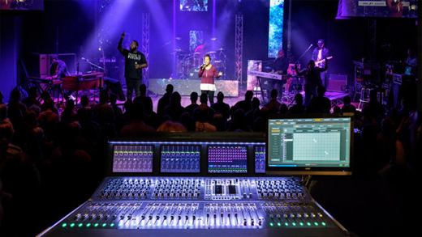
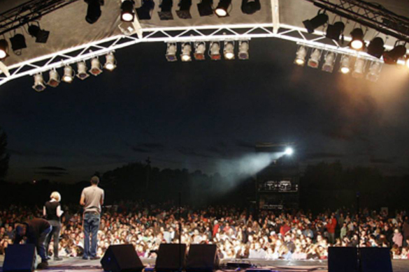
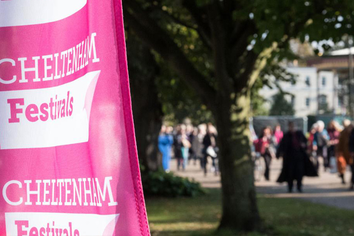
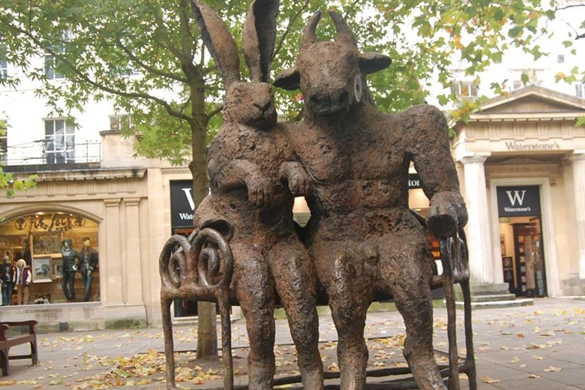
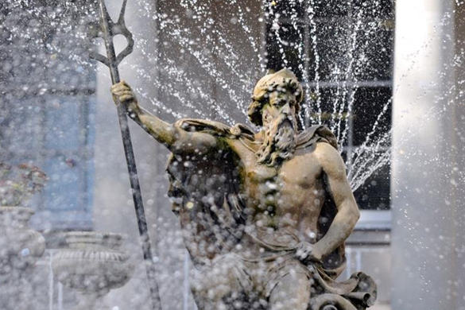
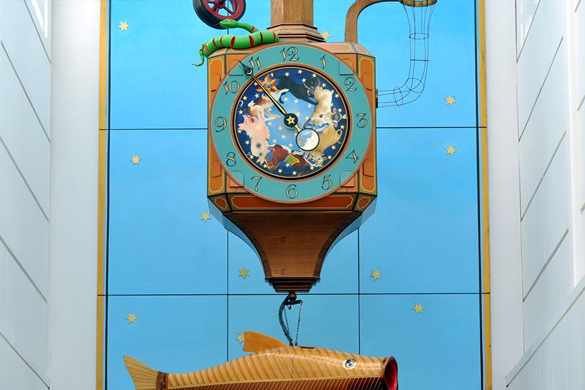
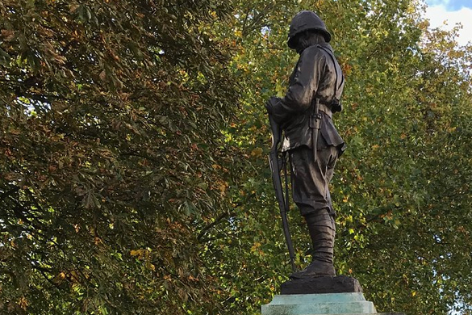
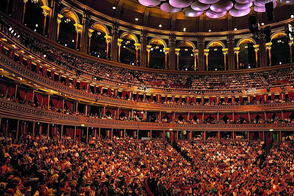

Places
Local
Global
Favorite
Sound Music Venue

Sound Music Venue is the most popular music
venue in Cheltenham according to Google.
The venue is open daily 18:30 - 00:00.
Cheltenham Stage Venue

Cheltenham Stage is a club that hosts
a lot of different parties and hires DJs
from all around the UK.
Cheltenham Festivals Venue

People say that Cheltenham Festivals make
Cheltenham a special place to live in.
The Hare and the Minotaur POI

The Hare and the Minotaur Statue in Cheltenham
an be found on The Promenade,
outside House of Fraser.
Gustav Holst Statue POI
Gustav Holst was at the heart of the
renaissance in English music during the
first half of the 20th century.
The Neptune Fountain POI

The Neptune Fountain is a monumental
statuesque piece depicting Greek god Neptune
in a shell-chario, being drawn by four
sea-horses and heralded by conch-shell
blowing merman.
Hailes Abbey POI
Founded in 1246 by the Earl of Cornwall,
Hailes Abbey is set amid delightful Cotswold
Cotswold countryside.
Wishing Fish Clock POI

The clock was designed by the
Gloucestershire-based artist Kit Williams
who wrote the 1979 book Masquerade which
led readers on the hunt for a golden
hare hidden somewhere in the UK.
Boer War Memorial POI

Bronze figure of a Boer War soldier with arms
reversed set a top a white stone plinth.
Royal Albert Hall Venue

The Royal Albert Hall is a concert hall on the
northern edge of South Kensington, London,
and is one of the UK's most treasured and
distinctive buildings.
Wishing Fish Clock POI
The clock was designed by the
Gloucestershire-based artist Kit Williams
who wrote the 1979 book Masquerade which
led readers on the hunt for a golden
hare hidden somewhere in the UK.